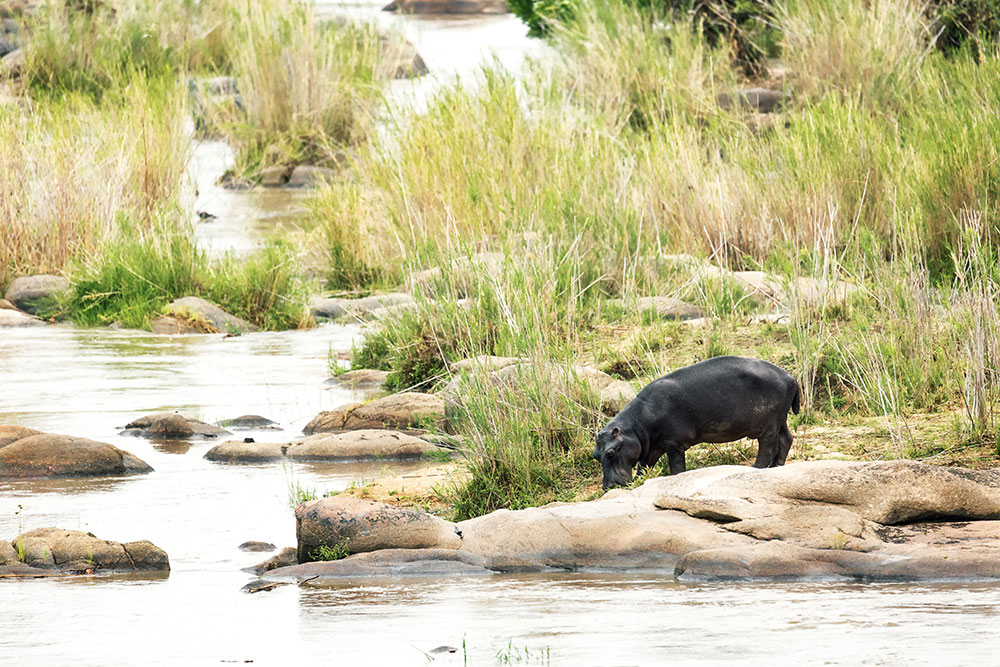

The Blyde River Canyon is a 26km long Canyon located in Mpumalanga, South Africa. It is the third-largest canyon on Earth, behind the Grand Canyon and the Fish River Canyon. Unlike the Grand and Fish River Canyon, the Blyde River Canyon is a "green canyon" which is dominated by subtropical vegetation. The Blyde River Canyon passes a rock formation known as the "Three Rondavels". So named as the formation resembles three African-style houses or rondavels. This canyon is part of the Panorama Route. This route starts at the town Graskop and includes God's Window, the Pinnacle and Bourke's Luck Potholes.

The Blyde River Canyon supports large diversity of life, including numerous fish and antelope species as well as hippos and crocodiles, and every primate species that may be seen in South Africa (including both greater and lesser bushbabies, vervet monkeys and Samango monkeys). The diversity of birdlife is similarly high, including the beautiful and much sought Narina trogon as well as species such as the Cape vulture, black eagle, crowned eagle, African fish eagle, gymnogene, jackal buzzard, white-rumped vulture, bald ibis, African finfoot, Knysna lourie, purple-crested lourie, Gurney's sugarbird, malachite sunbird, cinnamon dove, African emerald cuckoo, red-backed mannikin, golden-tailed woodpecker, olive bush shrike, green twinspot, Taita falcons (very rarely sighted, a breeding pair lives in the nearby Abel Erasmus Pass), Cape eagle owl, white-faced owl, wood owl, peregrine falcon, black-breasted snake eagle, Wahlberg's eagle, long-crested eagle, lanner falcon, red-breasted sparrowhawk, rock kestrel and others.
The canyon and the surrounding Drakensberg escarpment is a very popular tourist region with a well-developed tourism industry supported by good public infrastructure.

Wine tasting is one of the best ways to spend a day in Cape Town. Combine the delicious wines with some of the most beautiful landscapes on earth, century old architecture, and awe-inspiring food, and it’s no surprise that it's one of Cape Town's most beloved activities for visitors and locals alike.
Addo Elephant National Park is a diverse wildlife conservation park situated close to Port Elizabeth in South Africa and is one of the country's 20 national parks. It currently ranks third in size after Kruger National Park and the Kgalagadi Transfrontier Park.

The flora within the AENP is quite varied, and like all plant life, is a central factor to the ecological system in place. Several species of rare and endemic plants, particularly succulent shrubs and geophytes are native to the South African region within the AENP. Many species are under environmental pressure, however, and are facing possible extinction. More than 600 elephants, 400 Cape buffaloes, over 48 endangered black rhinos (Diceros bicornis michaeli) as well as a variety of antelope species. Lion and spotted hyena have also recently been re-introduced to the area. The largest remaining population of the flightless dung beetle (Circellium bacchus) is located within the park.

In 2018 the highest visitor count in the park's 87-year history was recorded. The park received 305,510 visitors between 1 April 2017 and 31 March 2018 (up from 265,585 in the previous year). International visitors make up 55% of this number, with German, Dutch and British nationals in the majority. There is a main camp, featuring a swimming pool, restaurant, flood lit water hole and various accommodation, four other rest camps and four camps run by concessionaires. The main entrance as well as two looped tourist roads in the park are tarred while the others are graveled. There is also an additional access road through the southern block of the park feeding off the N2 highway near Colchester; it joins up with the existing tourist roads in the park.
Hermanus (originally called Hermanuspietersfontein, but shortened in 1902 as the name was too long for the postal service), is a town on the southern coast of the Western Cape province of South Africa. It is famous for Southern Right whale watching during the southern winter to spring seasons, and is a popular retirement location. Although the Southern Right whale is the most prolific species in the bay, it is not the only one that visits these shores. The whales can be seen from the cliffs all along the coast from as early as June and usually depart in early-December. They were once hunted in the nearby town of Betty's Bay, but are now protected to ensure the survival of the species. The Old Harbour Museum contains several exhibitions that explain the whaling industry, and the De Wetshuis Photo Museum houses an exhibition of photos by T. D. Ravenscroft that depicts the history of Hermanus. The Whale Museum houses a skeleton of a whale and shows an audio-visual presentation of whales and dolphins twice daily.
Hermanus is classified as having a warm-summer Mediterranean climate (Köppen).[4] It receives roughly 520 mm of rain per annum, the majority of which falls during the winter months of June to August in the form of frontal precipitation. Average midday temperatures range from 25 °C in February to 16 °C in July.[4] Extremes above 30 °C and under 10 °C are not uncommon. Summer and Winter months are characterised by strong south-easterly and north-westerly winds respectively.
Over 100 varieties of bird species reside in the Greater Hermanus area. Species such as the Orange-breasted Sunbird, the Cape Sugarbird, Victorin's Warbler and many more rare, beautiful and fascinating animals, make Hermanus a popular destination for bird enthusiasts.
The Space Science Directorate of the South African National Space Agency, previously the Hermanus Magnetic Observatory (HMO), is a research facility of the National Research Foundation, and forms part of the worldwide network which monitors variations of the earth's magnetic field.